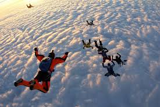
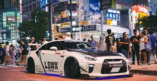
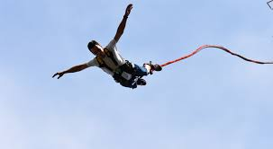

Skoki ze spadochronem
Skoki ze spadochronem to ekstremalny sport z wyskokiem z wysokości i otwarciem spadochronu. Wymaga odwagi i przeszkolenia.
Wyścigi samochodowe
Wyścigi samochodowe to rywalizacja pojazdów na torach i drogach, wymagająca precyzji, strategii i umiejętności.
Bungee
Skoki na bungee to ekstremalny skok z wysokości z elastyczną liną, oferujący emocje i adrenalinę.